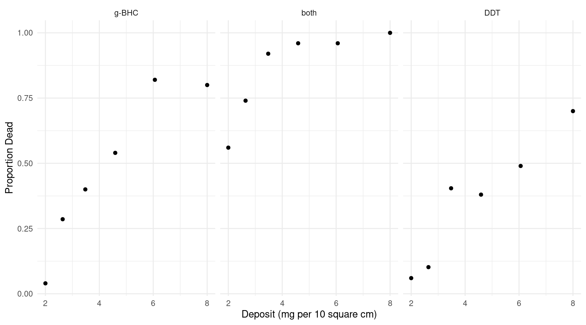
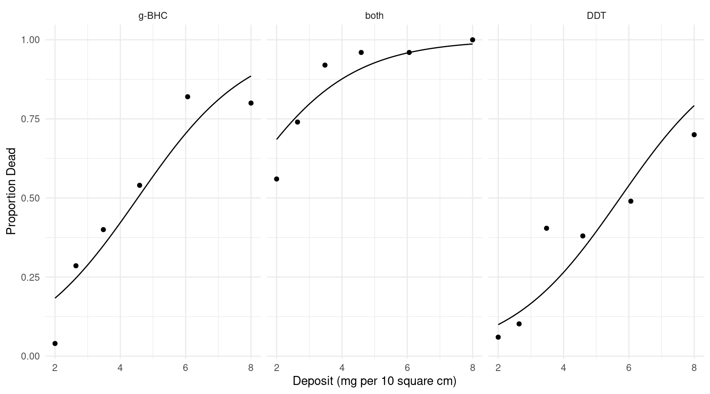
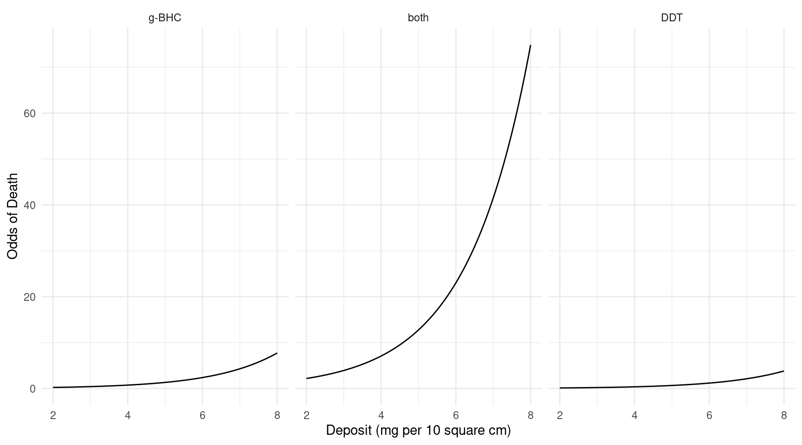
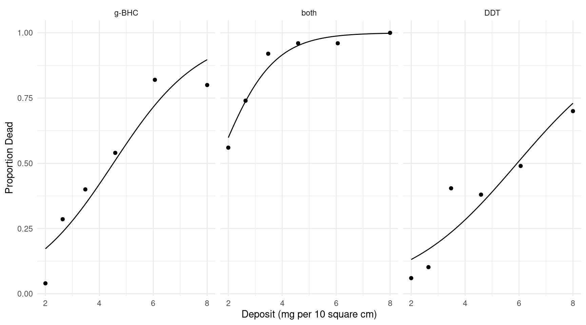
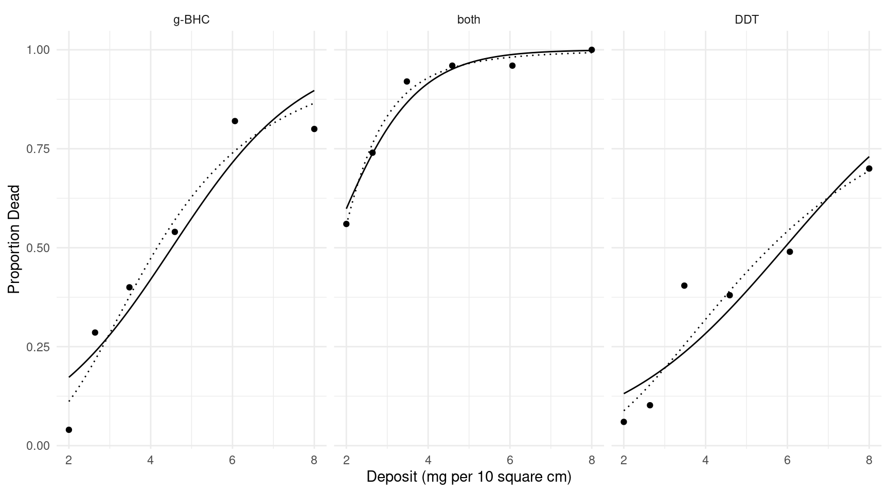
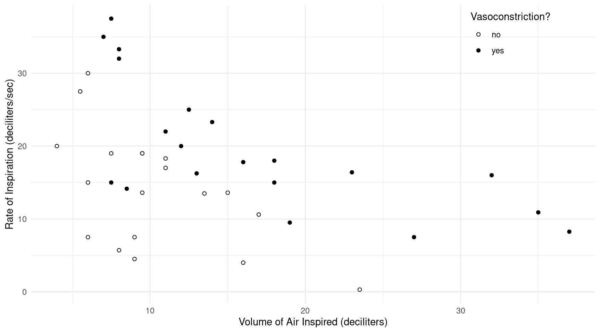
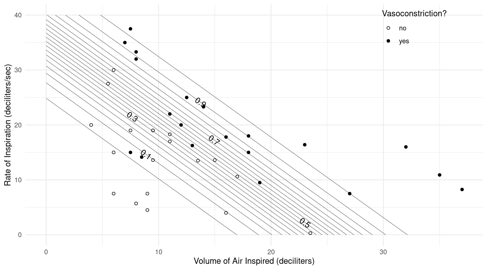
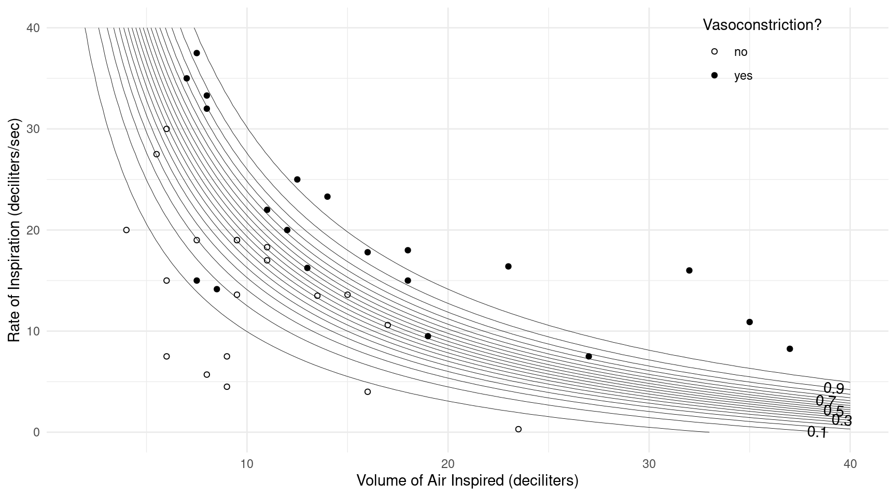
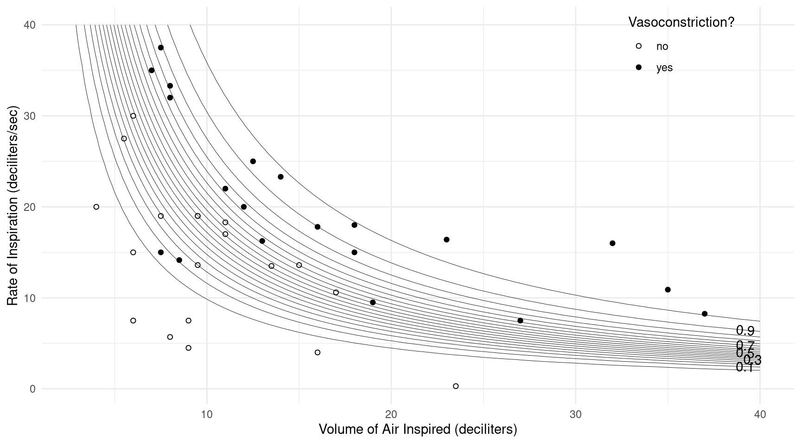

You can also download a PDF copy of this lecture.
Consider the following data from an experiment that investigated the effects of three insecticides on four beetles.
library(trtools) # contains the insecticide data frame
insecticide insecticide deposit deaths total
1 DDT 2.00 3 50
2 DDT 2.64 5 49
3 DDT 3.48 19 47
4 DDT 4.59 19 50
5 DDT 6.06 24 49
6 DDT 8.00 35 50
7 g-BHC 2.00 2 50
8 g-BHC 2.64 14 49
9 g-BHC 3.48 20 50
10 g-BHC 4.59 27 50
11 g-BHC 6.06 41 50
12 g-BHC 8.00 40 50
13 both 2.00 28 50
14 both 2.64 37 50
15 both 3.48 46 50
16 both 4.59 48 50
17 both 6.06 48 50
18 both 8.00 50 50p <- ggplot(insecticide, aes(x = deposit, y = deaths/total)) +
geom_point() + facet_wrap(~ insecticide) + theme_minimal() +
labs(x = "Deposit (mg per 10 square cm)", y = "Proportion Dead")
plot(p) First consider an “additive” logistic regression model (i.e., a model with no interaction).
m <- glm(cbind(deaths, total-deaths) ~ insecticide + deposit,
family = binomial, data = insecticide)
summary(m)$coefficients Estimate Std. Error z value Pr(>|z|)
(Intercept) -2.6731 0.24968 -10.706 9.548e-27
insecticideboth 2.2704 0.22583 10.054 8.839e-24
insecticideDDT -0.7074 0.19726 -3.586 3.356e-04
deposit 0.5898 0.04926 11.973 4.943e-33d <- expand.grid(deposit = seq(2, 8, length = 100),
insecticide = c("DDT","g-BHC","both"))
d$yhat <- predict(m, newdata = d, type = "response")
p <- p + geom_line(aes(y = yhat), data = d)
plot(p)
A model for the odds of death can be written as \[
O_i = e^{\beta_0}e^{\beta_1x_{i1}}e^{\beta_2x_{i2}}e^{\beta_3x_{i3}}
\] where \(x_{i1}\) and \(x_{i2}\) are indicator variables for the
insecticides both and DDT, respectively, and
\(x_{i3}\) is deposit. This can be
written case-wise as \[
O_i =
\begin{cases}
e^{\beta_0}e^{\beta_3d_i}, & \text{if the $i$-th
observation of insecticide is g-BHC}, \\
e^{\beta_0}e^{\beta_1}e^{\beta_3d_i}, & \text{if the $i$-th
observation of insecticide is both}, \\
e^{\beta_0}e^{\beta_2}e^{\beta_3d_i}, & \text{if the $i$-th
observation of insecticide is DDT},
\end{cases}
\] and where \(d_i = x_{i3}\) is
the deposit. We could plot the estimated odds of death as a
function of deposit and insecticide type.
d <- expand.grid(deposit = seq(2, 8, length = 100),
insecticide = c("g-BHC","both","DDT"))
d$yhat <- predict(m, newdata = d, type = "response")
d$odds <- d$yhat / (1 - d$yhat)
p <- ggplot(d, aes(x = deposit, y = odds)) +
geom_line() + facet_wrap(~ insecticide) + theme_minimal() +
labs(x = "Deposit (mg per 10 square cm)", y = "Odds of Death")
plot(p)
It can be shown that the odds ratio for a one unit increase in deposit
is \(e^{\beta_3}\) (regardless of
insecticide used), and the odds ratio for comparing both
with g-BHC is \(e^{\beta_1}\) (regardless of deposit
amount). We can get these odds ratios as follows.
exp(cbind(coef(m), confint(m))) 2.5 % 97.5 %
(Intercept) 0.06904 0.04182 0.1114
insecticideboth 9.68342 6.27529 15.2250
insecticideDDT 0.49292 0.33359 0.7235
deposit 1.80362 1.64187 1.9921But using contrast allows us to do this without having
to figure out the parameterization.
# estimate the odds ratio for dose (one unit increase)
contrast(m,
a = list(deposit = 3, insecticide = c("DDT","g-BHC","both")),
b = list(deposit = 2, insecticide = c("DDT","g-BHC","both")),
cnames = c("DDT","g-BHC","both"), tf = exp) estimate lower upper
DDT 1.804 1.638 1.986
g-BHC 1.804 1.638 1.986
both 1.804 1.638 1.986# estimate the odds ratio for type of insecticide (both versus DDT)
contrast(m,
a = list(deposit = c(2,5,8), insecticide = "both"),
b = list(deposit = c(2,5,8), insecticide = "g-BHC"),
cnames = c("2mg","5mg","8mg"), tf = exp) estimate lower upper
2mg 9.683 6.22 15.07
5mg 9.683 6.22 15.07
8mg 9.683 6.22 15.07Now suppose we include an interaction between dose and type of insecticide.
m.int <- glm(cbind(deaths, total-deaths) ~ insecticide * deposit,
family = binomial, data = insecticide)
summary(m.int)$coefficients Estimate Std. Error z value Pr(>|z|)
(Intercept) -2.81091 0.35845 -7.84177 4.442e-15
insecticideboth 1.22575 0.67176 1.82468 6.805e-02
insecticideDDT -0.03893 0.50722 -0.07676 9.388e-01
deposit 0.62207 0.07786 7.98986 1.351e-15
insecticideboth:deposit 0.37010 0.20897 1.77109 7.655e-02
insecticideDDT:deposit -0.14143 0.10376 -1.36301 1.729e-01d <- expand.grid(deposit = seq(2, 8, length = 100),
insecticide = c("DDT","g-BHC","both"))
d$yhat <- predict(m.int, newdata = d, type = "response")
p <- ggplot(insecticide, aes(x = deposit, y = deaths/total)) +
geom_point() + facet_wrap(~ insecticide) + theme_minimal() +
labs(x = "Deposit (mg per 10 square cm)", y = "Proportion Dead") +
geom_line(aes(y = yhat), data = d)
plot(p)
# estimate the odds ratio for the effect of dose
contrast(m.int,
a = list(deposit = 3, insecticide = c("DDT","g-BHC","both")),
b = list(deposit = 2, insecticide = c("DDT","g-BHC","both")),
cnames = c("DDT","g-BHC","both"), tf = exp) estimate lower upper
DDT 1.617 1.414 1.850
g-BHC 1.863 1.599 2.170
both 2.697 1.844 3.944# estimate the odds ratio for the effect of type of insecticide (both versus g-BHC)
contrast(m.int,
a = list(deposit = c(2,5,8), insecticide = "both"),
b = list(deposit = c(2,5,8), insecticide = "g-BHC"),
cnames = c("2mg","5mg","8mg"), tf = exp) estimate lower upper
2mg 7.142 3.785 13.47
5mg 21.677 8.293 56.67
8mg 65.797 7.956 544.14Now consider a model where we use \(\log\) transformation of dose.
m <- glm(cbind(deaths, total-deaths) ~ insecticide * log(deposit),
family = binomial, data = insecticide)
summary(m)$coefficients Estimate Std. Error z value Pr(>|z|)
(Intercept) -4.0428 0.4972 -8.1306 4.271e-16
insecticideboth 1.9221 0.7722 2.4892 1.280e-02
insecticideDDT 0.1278 0.7118 0.1796 8.575e-01
log(deposit) 2.8381 0.3392 8.3666 5.931e-17
insecticideboth:log(deposit) 0.5503 0.6662 0.8261 4.088e-01
insecticideDDT:log(deposit) -0.5602 0.4680 -1.1971 2.313e-01d <- expand.grid(deposit = seq(2, 8, length = 100),
insecticide = c("DDT","g-BHC","both"))
d$yhat <- predict(m, newdata = d, type = "response")
p <- p + geom_line(aes(y = yhat), data = d, linetype = 3)
plot(p) Now the odds ratio shows the effect of doubling the dose.
# odds ratio for the effect of increasing dose from 1 to 2 (doubling)
contrast(m,
a = list(deposit = 2, insecticide = c("DDT","g-BHC","both")),
b = list(deposit = 1, insecticide = c("DDT","g-BHC","both")),
cnames = c("DDT","g-BHC","both"), tf = exp) estimate lower upper
DDT 4.850 3.130 7.515
g-BHC 7.151 4.510 11.337
both 10.471 4.805 22.818# odds ratio for the effect of increasing dose from 2 to 4 (doubling)
contrast(m,
a = list(deposit = 4, insecticide = c("DDT","g-BHC","both")),
b = list(deposit = 2, insecticide = c("DDT","g-BHC","both")),
cnames = c("DDT","g-BHC","both"), tf = exp) estimate lower upper
DDT 4.850 3.130 7.515
g-BHC 7.151 4.510 11.337
both 10.471 4.805 22.818# odds ratio for the effect of increasing dose from 2 to 3 (not doubling)
contrast(m,
a = list(deposit = 3, insecticide = c("DDT","g-BHC","both")),
b = list(deposit = 2, insecticide = c("DDT","g-BHC","both")),
cnames = c("DDT","g-BHC","both"), tf = exp) estimate lower upper
DDT 2.518 1.949 3.254
g-BHC 3.161 2.414 4.138
both 3.951 2.505 6.231Contrasts between insecticides can proceed in the usual way although the results are not quite the same as when we did not transform dose.
# odds ratio to compare two insecticides at three doses
contrast(m,
a = list(deposit = c(2,5,8), insecticide = "both"),
b = list(deposit = c(2,5,8), insecticide = "g-BHC"),
cnames = c("2mg","5mg","8mg"), tf = exp) estimate lower upper
2mg 10.01 4.826 20.76
5mg 16.57 7.087 38.76
8mg 21.47 5.351 86.11At some point we will want to visit the issue of how to evaluate/select models.
Consider the following data from a study that investigated the relationship between vasoconstriction and the rate and volume of air breathed by human subjects. Here the response variable is binary and thus has a Bernoulli distribution (a special case of the binomial distribution).
library(catdata)
data(vaso)
head(vaso) vol rate vaso
1 1.3083 -0.19237 1
2 1.2528 0.08618 1
3 0.2231 0.91629 1
4 -0.2877 0.40547 1
5 -0.2231 1.16315 1
6 -0.3567 1.25276 1Volume (vol) is the logarithm of volume in liters, and
rate (rate) is the logarithm of liters per second. For this
example I am going to transform these variables to the volume and rate
in deciliters.
vaso$dvolume <- exp(vaso$vol)*10 # transform to deciliters
vaso$drate <- exp(vaso$rate)*10 # transform to deciliters per secI am also going to create a couple different versions of the response
variable: one that is a character for plotting and one that is binary
for modeling (note that the help file for vaso has coding
on the vaso variable backwards).
vaso$vasoconstriction <- ifelse(vaso$vaso == 1, "yes", "no")
vaso$y <- ifelse(vaso$vaso == 1, 1, 0) # create binary response
head(vaso) vol rate vaso dvolume drate vasoconstriction y
1 1.3083 -0.19237 1 37.0 8.25 yes 1
2 1.2528 0.08618 1 35.0 10.90 yes 1
3 0.2231 0.91629 1 12.5 25.00 yes 1
4 -0.2877 0.40547 1 7.5 15.00 yes 1
5 -0.2231 1.16315 1 8.0 32.00 yes 1
6 -0.3567 1.25276 1 7.0 35.00 yes 1Here is a scatterplot of volume and rate, with point color indicating vasoconstriction.
p <- ggplot(vaso, aes(x = dvolume, y = drate)) +
geom_point(aes(fill = vasoconstriction), shape = 21) +
scale_fill_manual(values = c("white","black")) +
labs(x = "Volume of Air Inspired (deciliters)",
y = "Rate of Inspiration (deciliters/sec)",
fill = "Vasoconstriction?") +
theme_minimal() + theme(legend.position = c(0.85, 0.9))
plot(p)
If the response variable is binary (i.e., 0 or 1) then we can
use glm(y ~ ...) rather than
glm(cbind(y, 1-y) ~ ...).
m <- glm(y ~ dvolume + drate, family = binomial, data = vaso)
cbind(summary(m)$coefficients, confint(m)) Estimate Std. Error z value Pr(>|z|) 2.5 % 97.5 %
(Intercept) -9.5296 3.23319 -2.947 0.003204 -17.5593 -4.4560
dvolume 0.3882 0.14286 2.717 0.006579 0.1654 0.7385
drate 0.2649 0.09142 2.898 0.003759 0.1177 0.4895exp(cbind(coef(m), confint(m))) 2.5 % 97.5 %
(Intercept) 7.267e-05 2.366e-08 0.01161
dvolume 1.474e+00 1.180e+00 2.09281
drate 1.303e+00 1.125e+00 1.63151d <- expand.grid(dvolume = seq(0, 40, length = 100),
drate = seq(0, 40, length = 100))
d$yhat <- predict(m, newdata = d, type = "response")
library(metR) # for geom_text_contour
p <- ggplot(vaso, aes(x = dvolume, y = drate)) +
geom_point(aes(fill = vasoconstriction), shape = 21) +
scale_fill_manual(values = c("white","black")) +
geom_contour(aes(z = yhat), data = d, color = "black",
size = 0.15, breaks = seq(0.05, 0.95, by = 0.05)) +
geom_text_contour(aes(z = yhat), data = d) +
labs(x = "Volume of Air Inspired (deciliters)",
y = "Rate of Inspiration (deciliters/sec)",
fill = "Vasoconstriction?") +
theme_minimal() + theme(legend.position = c(0.85, 0.9))
plot(p)
# odds ratio for the effect of volume
contrast(m, tf = exp,
a = list(dvolume = 2, drate = c(10,20,30)),
b = list(dvolume = 1, drate = c(10,20,30)),
cnames = c(paste("at", c(10,20,30), "dl/sec"))) estimate lower upper
at 10 dl/sec 1.474 1.114 1.951
at 20 dl/sec 1.474 1.114 1.951
at 30 dl/sec 1.474 1.114 1.951# odds ratios for rate
contrast(m, tf = exp,
a = list(drate = 2, dvolume = c(10,20,30)),
b = list(drate = 1, dvolume = c(10,20,30)),
cnames = c(paste("at", c(10,20,30), "dl"))) estimate lower upper
at 10 dl 1.303 1.09 1.559
at 20 dl 1.303 1.09 1.559
at 30 dl 1.303 1.09 1.559Now consider a model with a product term (i.e., “interaction”) for volume and rate.
m <- glm(y ~ dvolume + drate + dvolume*drate, family = binomial, data = vaso)
summary(m)$coefficients Estimate Std. Error z value Pr(>|z|)
(Intercept) -7.11496 3.34853 -2.1248 0.0336
dvolume 0.12637 0.21471 0.5886 0.5561
drate 0.05112 0.15082 0.3390 0.7346
dvolume:drate 0.02408 0.01662 1.4490 0.1473d <- expand.grid(dvolume = seq(0, 40, length = 100), drate = seq(0, 40, length = 100))
d$yhat <- predict(m, newdata = d, type = "response")
p <- ggplot(vaso, aes(x = dvolume, y = drate)) +
geom_point(aes(fill = vasoconstriction), shape = 21) +
scale_fill_manual(values = c("white","black")) +
geom_contour(aes(z = yhat), data = d, color = "black",
size = 0.15, breaks = seq(0.05, 0.95, by = 0.05)) +
geom_text_contour(aes(z = yhat), data = d) +
labs(x = "Volume of Air Inspired (deciliters)",
y = "Rate of Inspiration (deciliters/sec)",
fill = "Vasoconstriction?") +
theme_minimal() + theme(legend.position = c(0.85, 0.9))
plot(p)
# odds ratios for the effect of volume
contrast(m, tf = exp,
a = list(dvolume = 2, drate = c(10,20,30)),
b = list(dvolume = 1, drate = c(10,20,30)),
cnames = c(paste("at", c(10,20,30), "dl/sec"))) estimate lower upper
at 10 dl/sec 1.444 1.087 1.918
at 20 dl/sec 1.837 1.179 2.861
at 30 dl/sec 2.337 1.133 4.820# odds ratios for the effect of rate
contrast(m, tf = exp,
a = list(drate = 2, dvolume = c(10,20,30)),
b = list(drate = 1, dvolume = c(10,20,30)),
cnames = c(paste("at", c(10,20,30), "dl"))) estimate lower upper
at 10 dl 1.339 1.096 1.636
at 20 dl 1.704 1.083 2.680
at 30 dl 2.167 1.010 4.649Now about a model where we transform volume and rate to make it additive on the log scale?
m <- glm(y ~ log(dvolume) + log(drate), family = binomial, data = vaso)
exp(cbind(coef(m), confint(m)))Warning: glm.fit: fitted probabilities numerically 0 or 1 occurred
Warning: glm.fit: fitted probabilities numerically 0 or 1 occurred
Warning: glm.fit: fitted probabilities numerically 0 or 1 occurred
Warning: glm.fit: fitted probabilities numerically 0 or 1 occurred
Warning: glm.fit: fitted probabilities numerically 0 or 1 occurred
Warning: glm.fit: fitted probabilities numerically 0 or 1 occurred 2.5 % 97.5 %
(Intercept) 1.024e-11 8.144e-22 1.435e-05
log(dvolume) 1.776e+02 9.911e+00 1.902e+04
log(drate) 9.574e+01 5.540e+00 8.398e+03d <- expand.grid(dvolume = seq(0, 40, length = 100),
drate = seq(0, 40, length = 100))
d$yhat <- predict(m, newdata = d, type = "response")
p <- ggplot(vaso, aes(x = dvolume, y = drate)) +
geom_point(aes(fill = vasoconstriction), shape = 21) +
scale_fill_manual(values = c("white","black")) +
geom_contour(aes(z = yhat), data = d, color = "black",
size = 0.15, breaks = seq(0.05, 0.95, by = 0.05)) +
geom_text_contour(aes(z = yhat), data = d) +
labs(x = "Volume of Air Inspired (deciliters)",
y = "Rate of Inspiration (deciliters/sec)",
fill = "Vasoconstriction?") +
theme_minimal() + theme(legend.position = c(0.85, 0.9))
plot(p)
# odds ratios for the effect of volume
contrast(m, tf = exp,
a = list(dvolume = 2, drate = c(10,20,30)),
b = list(dvolume = 1, drate = c(10,20,30)),
cnames = c(paste("at", c(10,20,30), "dl/sec"))) estimate lower upper
at 10 dl/sec 36.24 2.877 456.3
at 20 dl/sec 36.24 2.877 456.3
at 30 dl/sec 36.24 2.877 456.3# odds ratios for the effect of rate
contrast(m, tf = exp,
a = list(drate = 2, dvolume = c(10,20,30)),
b = list(drate = 1, dvolume = c(10,20,30)),
cnames = c(paste("at", c(10,20,30), "dl"))) estimate lower upper
at 10 dl 23.62 1.945 286.7
at 20 dl 23.62 1.945 286.7
at 30 dl 23.62 1.945 286.7Doubling the volume or rate is a relatively large change. How about increasing it by only, say, 10% rather than 100%?
# odds ratios for the effect of volume
contrast(m, tf = exp,
a = list(dvolume = 1.1, drate = c(10,20,30)),
b = list(dvolume = 1.0, drate = c(10,20,30)),
cnames = c(paste("at", c(10,20,30), "dl/sec"))) estimate lower upper
at 10 dl/sec 1.638 1.156 2.321
at 20 dl/sec 1.638 1.156 2.321
at 30 dl/sec 1.638 1.156 2.321# odds ratios for the effect of rate
contrast(m, tf = exp,
a = list(drate = 1.1, dvolume = c(10,20,30)),
b = list(drate = 1.0, dvolume = c(10,20,30)),
cnames = c(paste("at", c(10,20,30), "dl"))) estimate lower upper
at 10 dl 1.545 1.096 2.177
at 20 dl 1.545 1.096 2.177
at 30 dl 1.545 1.096 2.177Note that we’d get the same results for any 10% increase in volume or rate (e.g., from 2.0 to 2.2) because both are on the log scale.